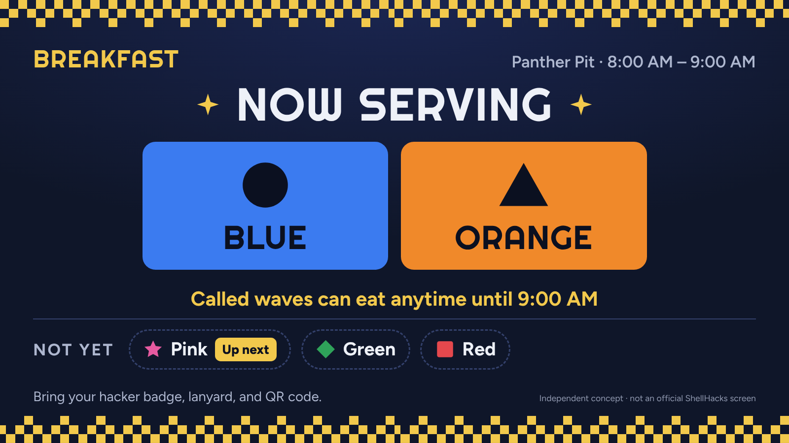
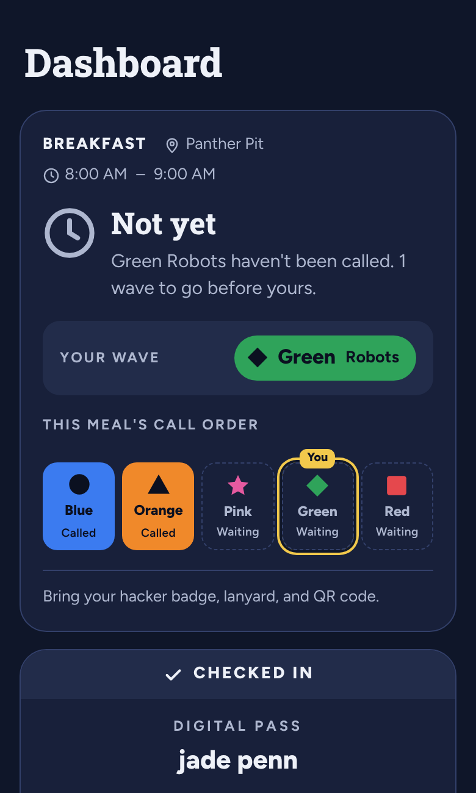

Case study · ShellHacks 2026 · Independent concept
Color Wave
Is my color up yet?
I surveyed 32 hackathon attendees about food waves and found the gap wasn't on Discord. It was in the room. So I designed one shared status for the phone and the screen above the food area, and built it as a working prototype.
- 32attendees surveyed
- 50%of attendees off Discord struggled, vs 11% on it
- 3connected screens